常用CMD命令
| 命令 | 作用 |
|---|---|
| 盘符名称+冒号 | 盘符切换 |
| dir | 查看当前路径下的内容 |
| cd 目录 | 进入目录 |
| cd .. | 回退到上一级目录 |
| cd \ | 回退到盘符目录 |
| cls | 清屏 |
| exit | 退出 |
面向对象
https://www.bilibili.com/video/BV17F411T7Ao?p=82&vd_source=b3a61f4abb2aa7da517f6cf364e96fdd
2 设计对象
1public class 类名{2成员变量；成员方法；构造器；代码块；内部类3}
3 封装
成员方法调用
成员变量使用private，通过getXXX和setXXX访问与修改，修改时要进行校验
4 就近原则和this关键字
5 构造方法
特点
- 方法名与类名完全相同
- 没有返回值类型
- 没有具体返回值
执行时机
- 创建对象时由虚拟机自动调用
- 每创建一个对象调用一次
注意事项
- 定义：如果没有自己写构造方法，虚拟机会自动加一个默认的空参数构造方法
- 重载：带参数（变量赋值）和无参数（变量初始化为默认值）
- 推荐：无论是否使用，都写带参数和无参数的构造方法
6 标准JavaBean
- 类名见名知义
- 成员变量采用private修饰
- 提供至少两个构造方法（无参和全参）
- 成员方法提供
getxxx和setxxx，以及其他行为
快捷键：alt+insert或者Fn+alt+insert
插件PTG：快速生成JavaBean类。文件-》设置-》插件
7 三种情况的对象内存图
栈、堆、方法区、本地方法栈、寄存器
J8：栈、堆、元空间、本地方法栈、寄存器
- 方法区：字节码文件加载时进入的内存
- 栈内存：方法运行时进入的内存（变量也在这里）
- 堆内存：new出来的东西会在这里开辟空间产生地址
创建对象虚拟机七步操作
- 加载class文件到方法区
- 声明局部变量
- 在堆内存开辟空间
- 默认初始化
- 显示初始化
- 构造方法初始化
8
9
10
字符串
java.lang.String类
注意：字符串创建后不能更改
构造方法和内存实现
直接赋值。会检查串池String Table内是否已有重复，有的话会复用（在方法区/堆）
new关键字- 不传入参数
- 传入字符串
- 字符数组
- 字节数组
字符串比较
- 基本数据类型比的是数据值
- 引用数据类型比较的是地址值
xxxxxxxxxx31String s1="abc";//串池里加2String s2="abc";//串池复用3s1==s2xxxxxxxxxx21String s1=new String("abc");//记录堆里的地址值2String s2=new String("abc");//记录串池里的地址值boolean equals(String)方法：比较字符串，考虑大小写boolean equalsIgnoreCase方法：比较字符串，不考虑大小写
String 字符串
x1boolean equals(String);//比较字符串，考虑大小写2boolean equalsIgnoreCase(String);//比较字符串，不考虑大小写3String substring(int beginIndex ,int endIndex);//截取字符串，包头不包尾4
5 String concat(String string2);//拼接字符串6
StringBuilder 字符串容器
string变化每次都要生成一个新的string，很低效；用stringbuilder操作字符串操作会快得多
xxxxxxxxxx81//构造方法2StringBuilder();3StringBuilder(String str);4//成员方法5StringBuilder append(任意类型);//添加数据，返回对象本身6StringBuilder reverse();//反转容器内的内容7int length();//返回容器内容长度8String toString();//将字符串容器转化成字符串StringJoiner
JDK8+
xxxxxxxxxx41//构造2StringJoiner(间隔符号);3StringJoiner(间隔符号，开始符号，结束符号);4
ArrayList集合
范型
xxxxxxxxxx101//构造2ArrayList<String> list=new ArrayList<String>();//JDK73ArrayList<String> list=new ArrayList<>();//JDK84//成员5boolean add(E e);//增6boolean remove(E e);//删7E remove(int index);//删8E set(int index,E e);//改9E get(int index);//查10int size();//长度工具类
- 不描述任何事物，不描述事物
- 私有化构造方法
- 方法静态
进阶
static 静态变量
封装
将事物封装成JavaBean类，并提供相应的属性和方法
继承
多种类有相同成员，可写父类用来继承
特点
- 只能单继承，不能多继承，不过可以多层继承
子类能继承父类的哪些内容
| 非私有 | 私有 | |
|---|---|---|
| 构造方法 | 不能 | 不能 |
| 成员变量 | 能 | 能（需要函数调用） |
| 方法 | 能 | 不能 |
继承中成员变量的访问特点
- 就近原则，先局部，后本类成员，后父类成员
继承中成员方法的访问特点
就近原则
可以用super访问父类方法
方法重写
- 返回小，权限大
继承中构造方法的特点
- 父类中的构造方法不会被子类继承
- 子类中所有的构造方法默认先访问父类中的无参构造，再执行自己
多态
- 同一类可以有多种形态
- 表现形式：
父类类型 对象名称 = 子类对象 - 前提：有继承/实现关系、有父类引用指向子类对象、有方法重写
- 优势：右边对象可以实现解耦合，便于拓展和维护；定义方法时用父类作参，可以接收所有子类对象，便利
- 弊端：不能使用子类的特有功能，要使用需要强转（加instanceof进行判断）
调用成员的特点：
- 变量：编译看左边，运行看左边（子类会继承父类相同变量）
- 方法：编译看左边，运行看右边（子类会覆盖父类相同方法）
包
- 作用：文件夹，管理不同功能的java类
- 写法：公司域名反写+包的作用，全部英文小写，见名知义
- 全类名=包名.类名
- 使用同一包、java.lang(java核心包)之外的其他类需要导包
- 使用不同包的同名类需要使用全类名
final
- 加在方法上：最终方法，不能重写
- 加类上：最终类，不能被继承
- 加在变量上：常量，只能被复制一次（基本数据类型数据不能变；引用数据类型地址值不能变，内部属性值可以变）
权限修饰符
- 控制成员能被访问的范围
- 可以修饰成员变量、成员方法、构造方法、内部类
- private、默认（不写）、protected、public（作用范围从小到大）
作用范围
- private：同一类中
- 默认：同一类中、同一包中其他类
- protected：同一类中、同一包中其他类、不同包下的子类
- public：同一类中、同一包中其他类、不同包下的子类、不同包下的无关类（全部）
使用规则
- 一般只用private和public，变量私有，方法公开；
- 特例：方法中的代码来自外界，只供自己使用
代码块
类的五大成员：属性、方法、构造方法、代码块、内部类
局部代码块、构造代码块、静态代码块
局部代码块
（已淘汰，现代硬件足够）
xxxxxxxxxx81public class Test{2 public static void main(String[] args){3 {//局部代码块4 int a=10;5 }//内存释放变量a6 //其他代码，访问不了a7 }8}构造代码块
（逐渐被淘汰，不够灵活）
- 写在成员位置
- 作用：把多个构造方法中重复的代码抽取出来
- 执行时间：创建本类对象时，调用构造方法前
xxxxxxxxxx131public class Student{2 private String name;3 {//构造代码块4 System.out.println("开始创建对象");//抽取出多个构造方法中重复的代码5 }6 Student(){7 //System.out.println("开始创建对象");8 };9 Student(String name){10 //System.out.println("开始创建对象");11 this.name=name;12 }13}- 代替1：用
this(null,0)调用其他构造函数内的代码 - 代替2：抽取成成员方法，在构造函数内调用
静态代码块（重点）
- 写在成员位置，格式：
static{} - 通过static关键字修饰，随着类的加载而加载，而且自动触发，只执行一次
- 使用场景：在类加载时，做数据初始化
抽象类和抽象方法
- 抽象方法：将共性的方法抽取到父类之后。由于每一个子类执行的内容是不一样的，所以在父类中不能确定具体的方法体，该方法就可以定义为抽象方法
- 抽象类：类中存在抽象方法必定为抽象类
作用：
- 抽取共性无法确定方法体
- 强制人子类按某种格式重写
定义格式
xxxxxxxxxx21public abstract 返回值类型 方法名(参数列表);//抽象方法2public abstract class 类名{};//抽象类- 抽象类不能实例化
- 抽象类中不一定有抽象方法，有抽象方法的类一定是抽象类
- 可以有构造方法
- 抽象类的子类要么重写抽象类中的所有抽象方法，要么是抽象类
接口
- 用关键字interface定义
public interface 接口名 {} - 不能实例化
- 接口和类之间是实现关系，通过implements关键字表示
public class 类名 implements 接口名 {} - 接口的子类（实现类）要么重写接口中的所有抽象方法，要么是抽象类
- 接口和类的实现关系，可以是单实现，也可以多实现。
public class 类名 implements 接口1，接口2 - 实现类还可以在继承一个类的同时实现多个接口
public class 类名 extends 父类 implements 接口1，接口2
成员特点
- 成员变量只能是常量，默认修饰符 public static final（不需要写）
- 没有构造方法
- 成员方法只能是抽象方法，默认public abstract不需要写(JDK8+可以定义有方法体的方法)
内部类
类的五大成员：属性、方法、构造方法、代码块、内部类
- 定义：在一个类的里面再定义一个类（对应外部类、外部无关类）
- 使用时机：B类表示的事物是A类的一部分
- 内部类表示的事物是外部类的一部分，内部类单独出现没有任何意义
- 访问特点：内部类可以直接访问外部类成员，包括私有；外部类要访问内部类的成员，必须创建对象
分类
- 成员内部类
- 静态内部类
- 局部内部类
- 匿名内部类
成员内部类
写在成员位置，属于外部类的成员
可以被一些修饰符修饰，比如：private, 默认, protected, public, static
JDK16+可以在成员内部类里面定义静态变量，JDK16-不能
获取成员内部类的方式：
- 内部类被private修饰时，外部类编写方法，对外提供内部类对象
- 内部类被非私有修饰时，直接创建对象
外部类.内部类 对象名 = 外部类对象（构造函数）.内部类对象(构造函数)
注意内部类和外部类不是继承关系，不能用
super访问内部类成员变量与外部类成员变量重名时，定义内部类访问方法并使用
outer().this.成员变量名在外部类内部访问内部类成员变量
静态内部类
静态内部类是一种特殊的成员内部类
静态内部类只能访问外部类中的静态变量和静态方法，如果想要访问非静态的需要创建对象。
创建静态内部类对象的格式：
外部类名.内部类名 对象名 = new 外部类名.内部类名()- 调用非静态方法的格式：先创建对象，用对象调用
- 调用静态方法的格式：直接调用
外部类名.内部类名.方法名()
局部内部类
- 内部类定义在方法里面，类似于方法里面的局部变量
- 外界无法直接使用，需要在方法内部创建对象并使用
- 该类可以直接访问外部类成员，也可以直接访问方法内的局部变量
匿名内部类
- 本质是隐藏了名字的内部类
xxxxxxxxxx41new 类名或接口名(){ //继承/实现，创建对象2 3 重写方法; //方法重写，重写接口中的所有抽象方法4}使用场景
- 当方法的参数是接口或者类时，可以传递这个接口的实现类对象，如果实现类只要使用一次，就可以用匿名内部类简化代码
阶段项目
GUI：图形化用户页面
- AWT包（会有兼容性、中文乱码问题）
- Swing包
java主要做后端开发
鼠标监听
xxxxxxxxxx61组件.addMouseListener();2 void mouseClicked(MouseEvent e){}//点击3 void mousePressed(MouseEvent e){}//按下4 void mouseReleased(MouseEvent e){}//松开5 void mouseEntered(MouseEvent e){}//进入6 void mouseExited(MouseEvent e){}//划出键盘监听
xxxxxxxxxx51窗口.addKeyListener();2 void keyType(KeyEvent e){}3 void keyPressed(KeyEvent e){}//按下4 void keyReleased(Key Event e){int keyCode=e.getKeyCode()}//松开5//abcd键对应ABCD的ASCII码
程序打包
- 代码打包成jar
- jar转换成exe
- exe+图片+JDK打包成最终的exe
一些类
Math数学类
java.lang.Math, JDK1.0+, 工具类
xxxxxxxxxx21static double E;//自然对数2static double PI;//圆周率| 方法 | 返回（作用） |
|---|---|
| abs(int a) | 绝对值 |
| ceil(double a) | 向上取整 |
| floor(double a) | 向下取整 |
| round(float a) | 四舍五入 |
| max(int a,b) | |
| pow(double a,b) | |
| random() | double [0.0,1.0) |
System系统类
工具类
计算机中的时间原点：1970/1/1 00:00:00，中国+8h
xxxxxxxxxx11
| void exit(int status) | 终止虚拟机 |
| long currentTimeMillis() | 返回当前系统的时间毫秒 |
| void arrcopy(数据源数组，起始索引，目的地数组，起始索引，拷贝个数) | 拷贝数组 |
Runtime
| static Runtime getRuntime() | 当前系统的运行环境对象 |
| void exit(int status) | 停止虚拟机 |
| int | 获得的CPU线程数 |
| long maxMemory() | JVM能从系统中获取总内存大小（单位byte） |
| long totalMemory() | JVM已经从系统中获取总内存大小 |
| long freeMemory() | JVM剩余内存大小 |
| Process exec(String command) | 运行cmd命令 |
Object
顶级父类。所有类没有共性，所以Object没有成员变量，也只有空参构造
| Object() | 空参构造（只有空参） |
| String toString() | 返回对象的字符串表示形式 |
| boolean equals(Object obj) | 比较对象是否相等 |
| protected Object clone(int a) | 对象克隆 |
Objects
BigInteger大数字
整数：byte,short,int,long，占用字节数：1,2,4,8
BigInteger对象一旦创建，内部记录的值不能发生改变
| 方法 | 作用 |
|---|---|
| BigInteger(int num,Radom rnd) | 构造方法，获取随机大整数（0~2的num次方-1） |
| BigInteger(String val) | 构造方法，获取指定的大整数 |
| BigInteger(String val,int radix) | 构造方法，获取指定进制的大整数 |
| static BigInteger valueOf(long val) | 静态方法获取BigInteger对象，有优化 |
| 方法 | 作用 |
|---|---|
| BigInteger add(BigInteger val) | 加法 |
| BigInteger subtract(BigInteger val) | 减法 |
| BigInteger multiply(BigInteger val) | 乘法 |
| 除法，获取商 | |
| 除法，获取商和余数 | |
| 比较是否相同 | |
| 次幂 | |
| 返回较大值/较小值 | |
| 转为int类型，可能溢出 |
BigDecimal大小数
精确运算小数、表示很大的小数
| 方法 | 作用 |
|---|---|
| BigDecimal(double val) | 构造方法 |
| BigDecimal(String val) | 构造方法 |
| static BigDecimal valueOf(double val) | 静态方法获取对象 |
正则表达式
作用：
- 校验字符串是否满足规则
- 在一段文本中查找满足要求的内容
bool string.matches("正则表达式")
只能匹配一个字符
| 字符类 | 含义 | 预定义字符 | 含义 |
|---|---|---|---|
| [abc] | |||
| [^abc] | |||
| [a-zA-Z] | |||
| [a] | |||

- Pattern 正则表达式
- Matcher文本匹配器，在字符串中寻找符合规则的字串
xxxxxxxxxx41String str="java8vajajava17"2Pattern p=Pattern.compile('java\\d{0,2}');3Matcher m=p.matcher(str);4bool
爬虫
本地爬虫和网络爬虫
JDK7时间
JDK8时间
包装类
Collection
- 列表List：LinkedList, ArrayList
- 集合Set：TreeSet, HashSet
- 双列集合Map：TreeSet, HashMap
Set
Set：元素无序、不重复、无索引
遍历
通用的遍历，同样适用于无索引
迭代器Interator
Collection集合获取迭代器
xxxxxxxxxx11Interator<E> interator();成员方法
xxxxxxxxxx31boolean hasNext();//判断单前位置是否有元素2E next();//获取当前位置的元素并移动迭代器对象到下一个位置3
eg
xxxxxxxxxx81List<String> List=...;2Interator<String> interator=list.interator();3while(interator.hashNext()){4 String str=interator.next();5 if(str.equals("xxx")){6 interator.remove();//调用迭代器的方法进行删除7 }8}注意：
- 遍历完毕指针不会复位
- 遍历过程不能用集合的方法进行增加或删除
- 需要用迭代器移除
增强for遍历
简化的迭代器写法，用于单列集合和数组
xxxxxxxxxx21//idea快速生成：集合名.for2for(E e : 集合名)e在循环的过程中依次表示集合中的每一个数据
细节
- 修改for中的变量无效
Lamdba表达式遍历
JDK8+
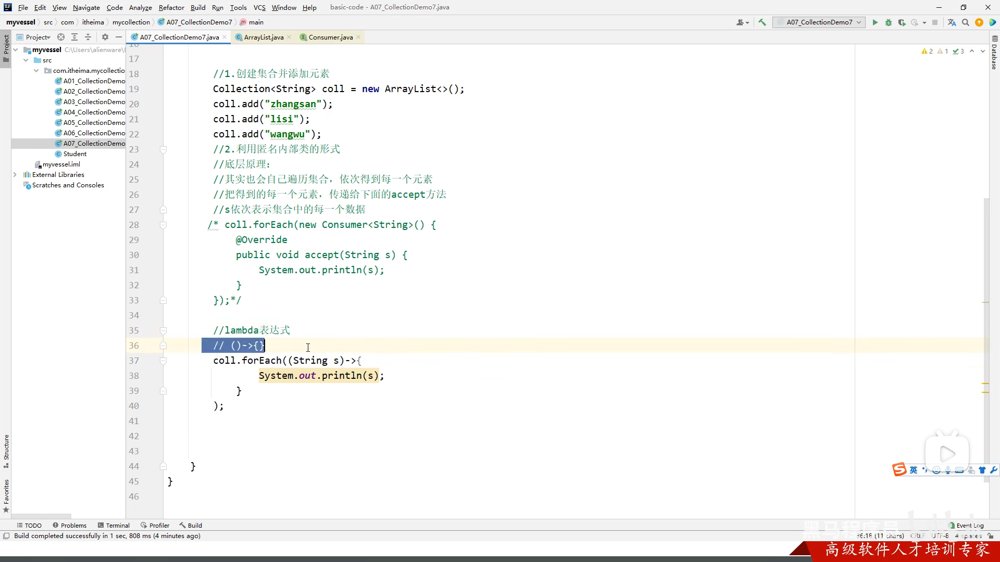
xxxxxxxxxx21List<String> List=...;2
List
特点：有序、有索引、可重复
泛型
java中的泛型是伪泛型，在编译阶段就擦除泛型
作用：统一数据类型，把运行时期的问题提前到编译时期
不能写基本数据类型（不能转成Object），写泛型后传递数据只能传该类型或子类，不写泛型类型默认是是Object
泛型类、泛型方法、泛型接口
泛型通配符
泛型只能传递指定类型（不能传子类、父类）
? extends E可以传E或E的子类
? super E可以传E或E的父类
xxxxxxxxxx11 void xxxmethod(ArrList< ? extends E> list) 可以限定泛型的范围
下部 Java SE
双列集合
双列集合内元素成对，一一对应，称为键值对（对象）
特点
- 一次存一对数据，分别为键和值
- 键不能重复，值可能重复
- 键值一一对应，每个键只能找到自己对应的值
- 键值对（对象），在java中叫做Entry对象
Map
- Map是双列集合的顶部接口，它的功能是全部双列集合都可以继承使用的

| 方法 | 说明 |
|---|---|
| V put(K key,V value) | 添加元素(如果键值已经存在，覆盖并返回原值，否则返回null) |
| V remove(Object key) | 根据键删除键值对 |
| void clear() | 移除所有的键值对 |
| boolean containsKey(Object key) | 判断集合是否包含指定的键 |
| boolean containsValue(Object value) | 判断集合是否包含指定的值 |
| boolean isEmpty() | 判断集合是否为空 |
| int size() | 集合的长度（键值对的个数） |
xxxxxxxxxx21Map<String,String> m = new HashMap<>();2m.put("123","ssb");遍历方式
1、键找值
xxxxxxxxxx41Set<String> Keys = map.keySet();//把键放入单列集合2for(String key : Keys){ //使用增强for遍历单列集合3 String value = map.get(key);//根据键找值4}2、键值对
xxxxxxxxxx51Set<Map.Entry<String,String>> entries = map.entrySet();//将键值对对象放入集合2for(Map.Entry<String,String>entry : entries){3 String key = entry.getKey();4 String value = entry.getValue();5}3、Lambda表达式
xxxxxxxxxx101map.forEach(new BiConsumer<String,String>(){2 3 public void accept(String key,String String value){4 5 }6});7//简化8map.forEach((key,value)->{9 xxx;10})HashMap

特点
- Map的一个实现类
- 直接使用Map里的方法，没有额外要学的特有方法
- 特点由键决定：无序、不重复、无索引
- 和HashSet底层原理一样，都是哈希表结构
插入时生成Entry键值对对象，根据键计算出哈希值；链表长度超过8&&数组长度超过64时，链表会自动转化为红黑树
如果键是自定义对象，要重写hashCode和equals方法
LinkedHashMap
由键决定：有序、不重复、无索引（存储和取出的元素顺序一致）
原理：底层数据结构依然是哈希表，只是每个键值对元素又额外多了一个双链表记录存储的顺序
xxxxxxxxxx81//创建集合2LinkedHashMap<String,Integer> lhm=new LinkedHashMao<>();3//添加元素4lhm.put("a",111);5lhm.put("a",222);6lhm.put("b",222);7//打印集合8System.out.printlm(lhm);TreeMap
和Treeset一样，底层是红黑树
由键决定特性：不重复、无索引、可排序（对键进行排序）
默认按键的大小从小到大进行排序，也可以自己规定键的排序规则
- 实现Comparable接口
- 创建集合时传递比较器对象
xxxxxxxxxx71Tree<Integer,String> tm =new TreeMap<>(new Comparator<Integer>{2 3 public int compare(Integer o1,Integer o2){4 //o2为已经存在的元素5 return o2-o1;6 }7})Collections工具类
异常
异常：代表程序出现的问题

Error
系统级错误
Exception
程序可能出现的问题
xxxxxxxxxx11public class void main(String[] args)throws ParseException{}运行时异常
比如：数组越界
编译时异常
比如：日期解析异常；在编译阶段必须处理
作用：
- 查询bug的关键参考信息
- 方法内部的返回值，确定代码的运行情况
处理：
- JVM默认：把异常名称、异常原因、及异常出现的位置 等信息输出在控制台，并停止程序运行
- 捕获异常：try{可能出现异常的代码}catch(异常类名，变量名){处理异常的代码}
BIO、NIO
File类
表示一个文件/文件夹路径
构造函数
xxxxxxxxxx31public File(String pathname);2public File(String parent,String child);3public File(File parent,String child);windows路径分割符为\，Linux路径分割符为/


字节流
FileOutputStream
xxxxxxxxxx61FileOutputStream f=new FileOutputStream(String 路径);2//如果文件不存在但是父级路径存在，会创建一个新的文件；如果文件已经存在，会清空原有文件3f.write(int 参数);//字符编码，一次写一个4f.write(byte[] b)//一次写一个字节数组5f.write6f.close();
- 该函数的返回值为int数值，表示读取的字符对应的ascii码,当返回为-1表示读取到文件末尾;
- 返回读入缓冲区的字节总数，到末尾返回-1
- off表示目标数组b中的起始偏移量，也就是从第几个下标开始写入数组，len表示写入数组的长度；
FileInputStream
xxxxxxxxxx31FileInputStream fis=new FileInputStream("xxx\\xxx.txt");//创建对象，打开资源2int b1=fis.read();//读取，读取一个字节（英文字符会变成ASCII码）3fis.close();//释放资源- 文件不存在直接报错
- 一次读一个字节，读一个字节移动一次指针
- 读到末尾
read返回-1
循环读取
xxxxxxxxxx51FileInputStream fis=new FileInputStream("xxx\\xxx.txt");//创建对象，打开资源2while(b=fis.read()!=-1){3 ...4}5fis.close();//释放资源拷贝文件（小文件）
xxxxxxxxxx111//1、创建对象2FileInputStream fis=new FileInputStream("xxx\\xxx.mp4");3FileOutoutStream fos=new FileOutputStream("xxx\\xx0.mp4");4//2、拷贝5//核心思想：边读边写6int b;7while((b=fis.read())!=-1){8 fos.write(b);9}10//3、释放资源11//规则：先开的后关闭弊端：慢，一次一字节
FileInputStream一次读多个字节
- public int read(byte[] buffer)
- 一次读一个字节数组的数据，每次读取会尽可能把数组装满
- 1024的整数倍、1024*1024*5
xxxxxxxxxx121//1、创建对象2FileInputStream fis=new FileInputStream("xxx\\xxx.mp4");3FileOutoutStream fos=new FileOutputStream("xxx\\xx0.mp4");4//2、拷贝5//核心思想：边读边写6int len;7byte[] bs=new byte[1024*1024*5];8while((len=fis.read(bs))!=-1){9 fos.write(bs,0,len);10}11//3、释放资源12//规则：先开的后关闭捕获异常
xxxxxxxxxx31try{}//尝试执行2catch{}//尝试失败时执行3finally{}//一定执行，除非JVM退出基本做法：手动释放资源
xxxxxxxxxx111try{2 FileOutputStream fos=...;3 fos.write(97);4 //可能出现异常的代码5}catch(IOException e){6 e.printStackTrace();7 //异常的处理代码8}finally{9 fos.close();10 //执行所有资源释放操作11}JDK7方案：
xxxxxxxxxx51try(创建流对象1;创建流对象2){2 可能出现异常的代码;3}catch(异常类名 变量名){4 异常的处理代码;5}//资源用完自动释放JDK9方案：
xxxxxxxxxx71创建流对象1;2创建流对象2;3try(流1;流2){4 可能出现异常的代码;5}catch(异常类名 变量名){6 异常的处理代码;7}//资源用完最终自动释放字符集详解
ASCII
一个字符一个字节
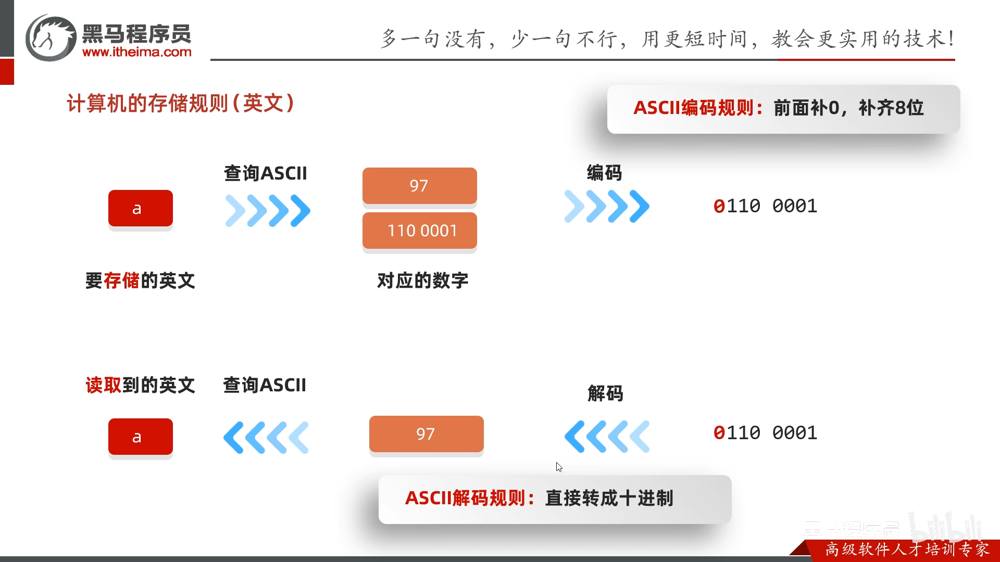
GBK
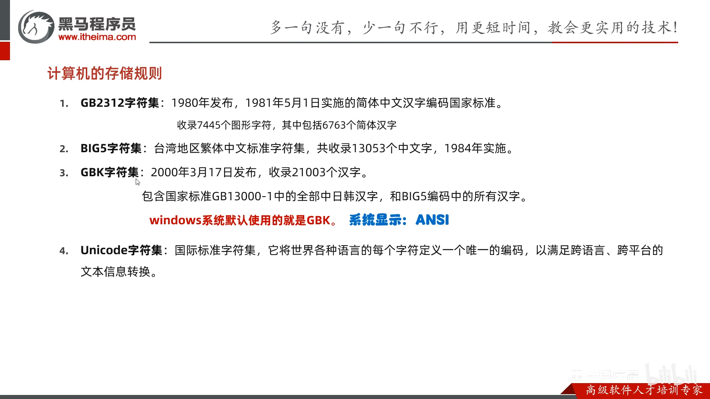
英文兼容ASCII，首位是0，汉字用两个字节，首位是1
Unicode
UTF：Unicode Transfer Format
UTF-8：1~4字节
UTF-16：2~4字节
UTF-32编码规则：4字节
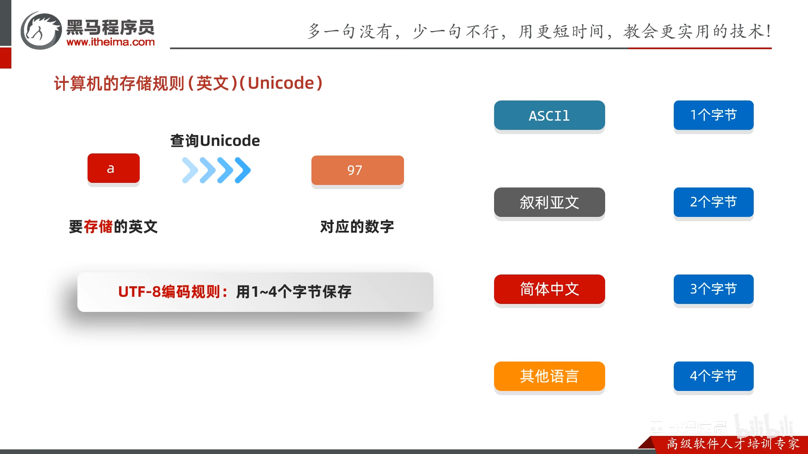
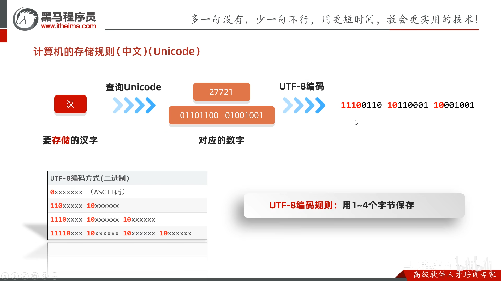
乱码原因
- 读取数据未读完整个汉字
- 编码和解码方式不统一
编码和解码
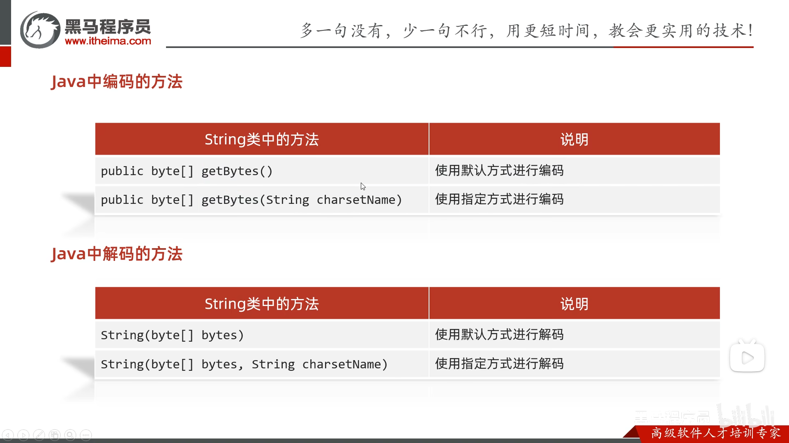
编码
字符流
字符流的底层其实是字节流
字符流 = 字节流 + 字符集
特点：
- 输入流：一次读一个字节，遇到中文时，一次读多个字节
- 输出流：底层会把数据按照指定的编码方式进行编码，变成字节再写到文件中
使用场景：对于纯文本文件进行读写操作
FileReader
1、创建字符输入流对象
| 构造方法 | 说明 |
|---|---|
| public FileReader(File file) | 创建字符输入流关联本地文件 |
| public FileReader(String pathname) | 创建字符输入流关联本地文件 |
2、读取数据
| 成员方法 | 说明 |
|---|---|
| public int read() | 读取数据，返回编码，读到末尾返回-1，读到中文返回的是解码并转码成十进制（可以char强转成中文） |
| public int read(char[] buffer) | 读取多个数据，返回xxx，读到末尾返回-1 |
- 按字节进行读取，读到中文，一次读取多个字节并解码；返回一个整数
- 读到文件末尾返回
-1
3、释放资源public void close();
FileWriter
1、创建字符输出流对象

- 字符串/File对象表示的路径
- 如果文件不存在但父级路径存在会创建一个新的文件
- 如果文件已经存在则会清空文件，除非打开续写开关
2、写数据

- 如果write的参数是整数，写到本地文件中的是整数在字符集上对应的字符
3、释放资源
- 使用完要释放资源
close()
字符缓冲流
Buffer
转换流
序列化流
字节打印流
字符打印流
解压缩流
压缩流（单文件）
压缩流（多文件）
常用工具包
网络爬虫
多线程&JUC
概念
线程、进程
使用场景：耗时操作、聊天软件、后台服务器
并发：同一时刻，多个指令在单个CPU上交替执行
并行：同一时刻，多个指令在多个CPU上同时执行
实现
1、继承Thread类
定义类继承Thread、重写run方法、创建对象并启动
xxxxxxxxxx61public class MyThread extends Thread{//定义类继承Thread2 3 public void run(){4 System.out.println(getName());5 }6}xxxxxxxxxx31Mythread t1=new MyThread();2t1.setName("xxx");3t1.start();
2、实现Runnable接口
定义一个类实现Runnable接口、重写里面的run方法、创建自己类的对象、创建一个Thread类的对象，开启线程
xxxxxxxxxx71public class MyRun implements Runnable{//实现Runnable接口2 3 public void run(){//重写里面的run方法4 Thread t=Thread.currentThread();5 System.out.println(t.getName());6 }7}xxxxxxxxxx31MyRun mr=new MyRun();//创建自己类的对象2Thread t1=new Thread(mr);//创建一个Thread类的对象3t1.start();//开启线程
3、Callable接口和Future接口实现
特点：可以获取到多线程运行的结果
实现Callable接口，重写call，创建MyCallable对象（任务），创建FutureTask对象（管理运行结果），创建Thread对象并启动线程
xxxxxxxxxx61public class MyCallable implements Callable<E>{2 3 public E call() throws Exception{//有返回值4 return e;5 }6}xxxxxxxxxx21MyCallable mc=new MyCallable();2FutureTask<Integer> ft =
成员方法
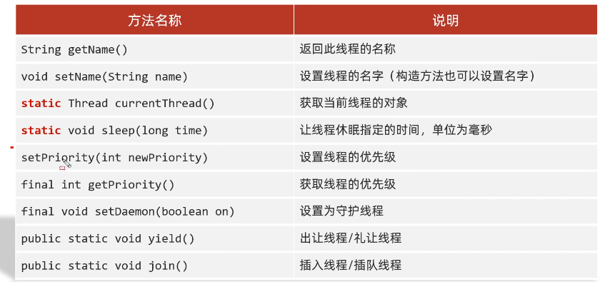
| 方法 | 说明 |
|---|---|
| String getName() | 返回此线程的名称 |
| void setName(String name) | 设置线程的名字 |
| static Thread currentThread() | 获取当前线程的对象 |
| static void sleep(long time) | 让线程休眠指定的毫秒 |
| setPriority(int newPriority) | 设置线程的优先级 |
| final int getPriority() | 获取线程的优先级 |
| final void setDaemon(boolean on) | 设置为守护线程 |
| public static void yield() | |
线程的优先级
非抢占式调度与抢占式调度
优先级范围：1~10，优先级越大，抢占到的概率越大
优先级默认值为5，主线程默认为5
getPriority,setPriority
守护线程（备胎线程）
当其他的非守护线程执行完毕后，守护线程会陆续结束
eg、聊天为非守护、下载文件为守护线程
礼让线程
插入线程
生命周期
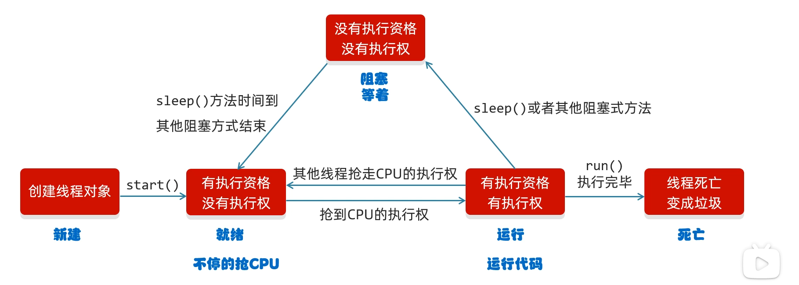
安全问题
同步代码块
xxxxxxxxxx21static Object obj=new Object;2synchronized (锁对象){}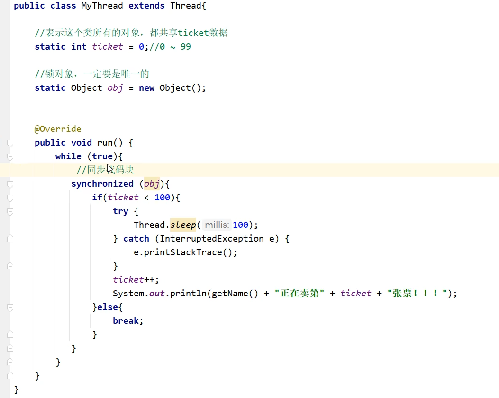
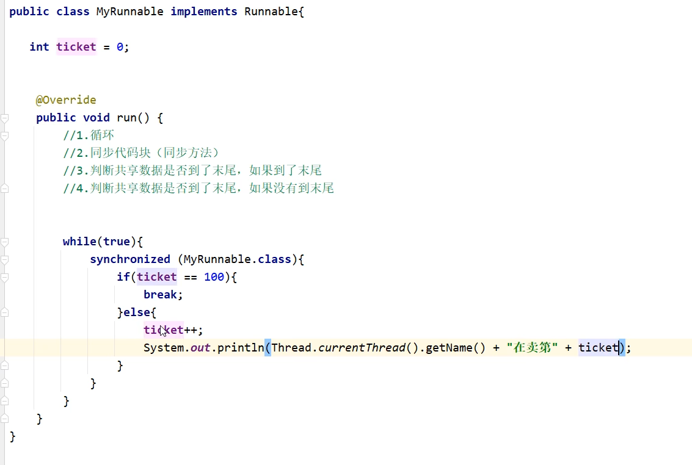
同步方法
xxxxxxxxxx11修饰符 synchronized 返回值类型 方法名(方法参数){}锁住方法里所有方法，锁对象不能自己指定
非静态方法的锁：this，静态方法的锁：当前类的字节码文件对象
Lock锁
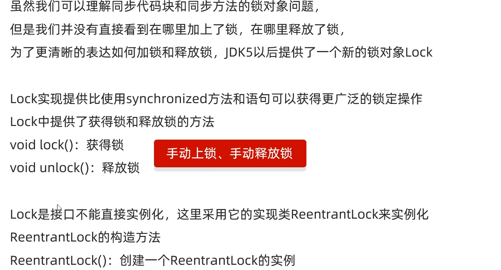
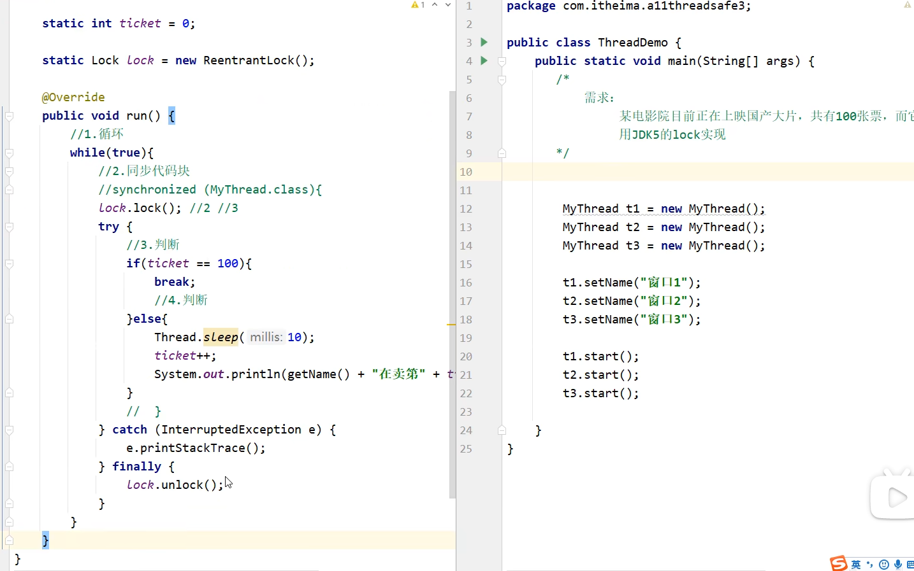
死锁
等待唤醒机制
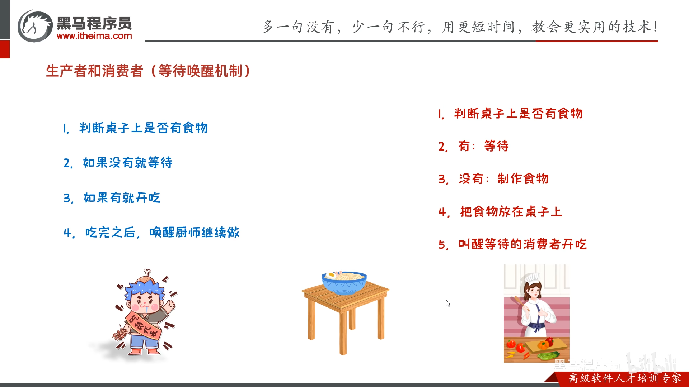
常用方法
xxxxxxxxxx31void wait();2void notify();//随机唤醒单个线程3void notifyAll();//唤醒所有线程多线程代码步骤：
- 循环
- 同步代码块
- 判断共享数据是否到末尾
- 执行核心逻辑
消费者
xxxxxxxxxx261public class Foodie extends Thread{2 3 public void run(){4 while(true){5 synchronized(Desk.lock){6 if(Desk.count==0){7 break;8 }else{9 //判断桌子上是否有面条10 if(Desk.foodFlag==0){11 try{12 Desk.lock.wait();//当前线程和锁进行绑定13 }catch(InterruptedExpection e){14 e.printStackTrace();15 }16 }else{17 System.out.println("1");18 Desk.lock.notifyAll();//唤醒厨师19 Desk.count--;20 Desk.foodFlag=0;21 }22 }23 }24 }25 }26}生产者
xxxxxxxxxx201public class Cook extends Thread{2 3 public void run(){4 while(true){5 synchronized(Desk.lock){6 if(Desk.count==0){7 break;8 }else{9 if(Desk.foodFlag==0){10 System.out.println("");11 Desk.foodFlag=1;12 Desk.lock.notifyAll();13 }else{14 Desk.lock.wait(); 15 }16 }17 }18 }19 }20}第三者
xxxxxxxxxx51public class Dask{2 public static int foodFlag=0;3 public static int count=10;4 public static Object lock = new Object();5}运行代码
xxxxxxxxxx61Cook c=new;2Foodie f=new;3c.setName("厨师");4f.setName("吃货");5c.start();6f.start();阻塞队列实现
接口：Iterable(可用迭代器/增强循环)----Collection(单列集合)----Queue(队列)----BlockingQueue(阻塞队列)
实现类：ArryBlockingQueue(有界)，LinkBlockingQueue(无界)
用了阻塞队列就不用自己加锁了
线程的状态
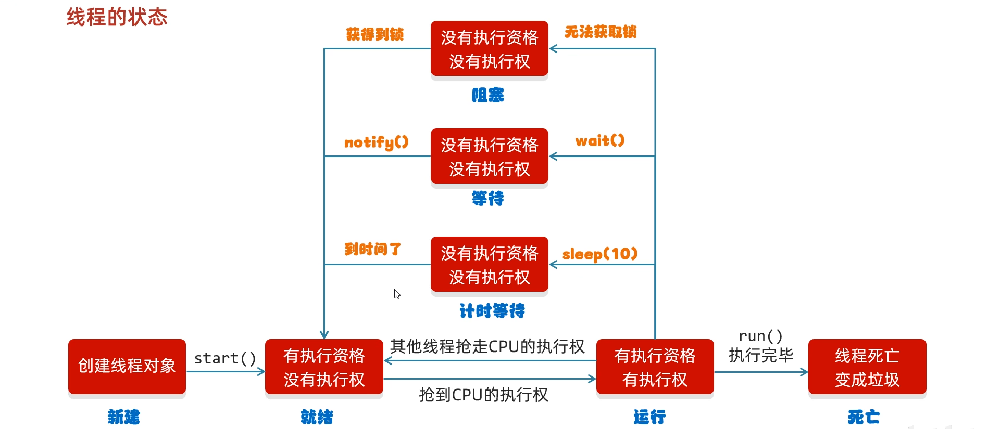
网络编程
网络通信协议下，不同计算机上运行的程序，进行的数据传输
java.net包
BS：浏览器/服务器
不需要开发客户端，只需要页面+服务端；用户无需下载安装；
CS：客户端/服务器
画面优美，用户体验好；需要开发客户端/服务端；下载更新麻烦
IP：设备在网络中的地址
端口号：应用程序在设备中的标识
协议：数据在网络中传输的规则
UDP、TCP、http、https、ftp
InetAddress类
子类：Inet4Address``Inet6Address
没有对外构造方法，只能通过静态方法获取
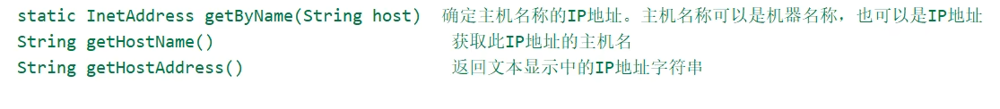
xxxxxxxxxx51static InetAddress getByName(String host);2String getHostName();3//如果局域网内找不到该主机，则会返回IP地址4String getHostAddress()5
端口号：
范围：0-65535；
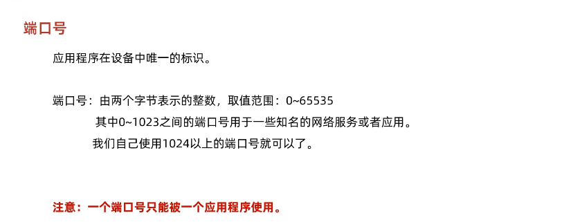
协议
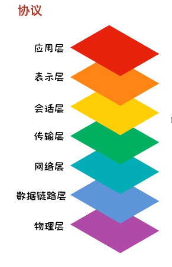
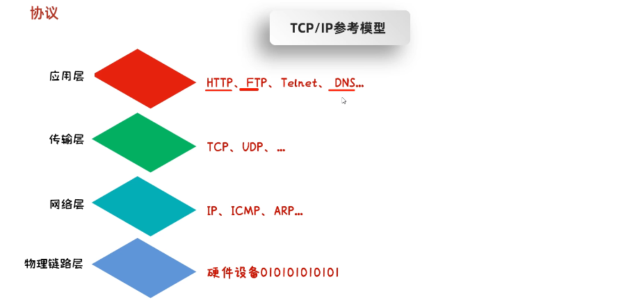
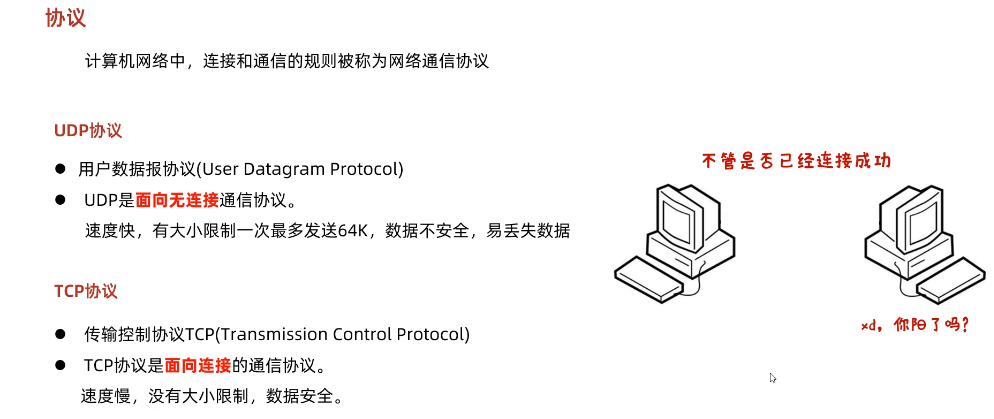
UDP协议
发送数据
xxxxxxxxxx141//创建对象（快递公司），绑定端口号2DatagramSocket ds = new DatagramSocket(12345);3//没写端口号，从可用端口里随机取一个4//2、打包数据5String str = "hello";6byte[] bytes = str.getBytes();7InetAddress address = InetAddress.getByName("127.0.0.1");8int port = 10086;v 9DatagramPack dp = new DatagramPack(bytes,bytes.length,address,port);10//3、发送数据11ds.send(dp);12//4、释放资源13ds.close();14
接收数据
xxxxxxxxxx141
2DatagramSocket ds = new DatagramSocket(10086);3//一定要绑定端口4
5byte[] bytes = new byte[1024];6DatagramPack dp = new DatagramPacket(bytes,bytes.length);7//2、接收数据包(阻塞的方法)8ds.receive(dp);9//3、解析数据包10byte[] data=new byte[1024];11int len=dp.getLength();12System.out.println(new String(data,0,len));13//4、14ds.close();单播、组播、广播
组播地址：224.0.0.0~239.255.255.255，其中224.0.0.0~224.0.0.255为预留端口
广播地址：255.255.255.255
组播
发送
xxxxxxxxxx11MulticastSocket ms = new MulticastSocket();接收
xxxxxxxxxx31MulticastSocket ms = new MulticastSocket(10000);2InetAddress address =InetAddress.getByName("224.0.0.2");3ms.joinGroup(address);//将本机添加到224.0.0.2的组播地址广播
单播地址发送代码地址改成255.255.255.255即可
TCP通信协议
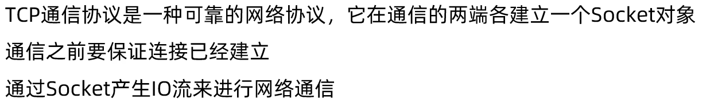
客户端
发送数据
xxxxxxxxxx91//1、创建对象，链接服务端，连不上会报错2Socket socket = new Socket("127.0.0.1",25565);3//2、从连接通道中获取输出流4OutputStream os = socket.getOutputStream();5//写数据6os.write("hello ".getBytes());7//38//os.close();//IO流可以不手动关9socket.close();
服务端
接收数据
xxxxxxxxxx141//1、创建对象2ServerSocket ss = new ServerSocket(10000);3//2、监听客户端链接4Socket socket = ss.accept();5//3、从连接通道中获取输入流6InputStream is=socket.getInputStream();7int b;8while((b=is.read())!=-1){9 System.out.print(b);10}11//4、释放资源12socket.close();13ss.close();14
读中文
xxxxxxxxxx161//1、创建对象2ServerSocket ss = new ServerSocket(10000);3//2、监听客户端链接4Socket socket = ss.accept();//等待链接5//3、从连接通道中获取输入流6InputStream is=socket.getInputStream();7InputStreamReader isr=new InputStreamReader(is);//转化成字符流8BufferedReader br =new BR(isr);//缓冲流提高效率9//缓冲流提高效率10int b;11while((b=br.read())!=-1){12 System.out.print(b);13}14//4、释放资源15socket.close();16ss.close();
三次握手链接，四次挥手断开
三次握手
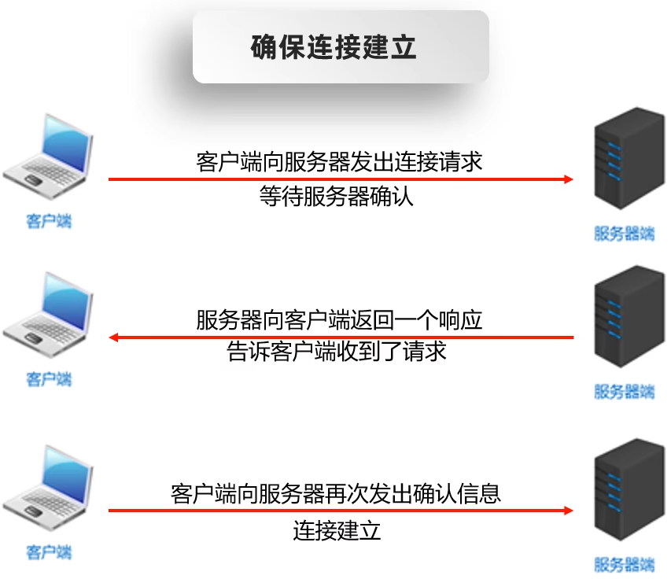
四次挥手
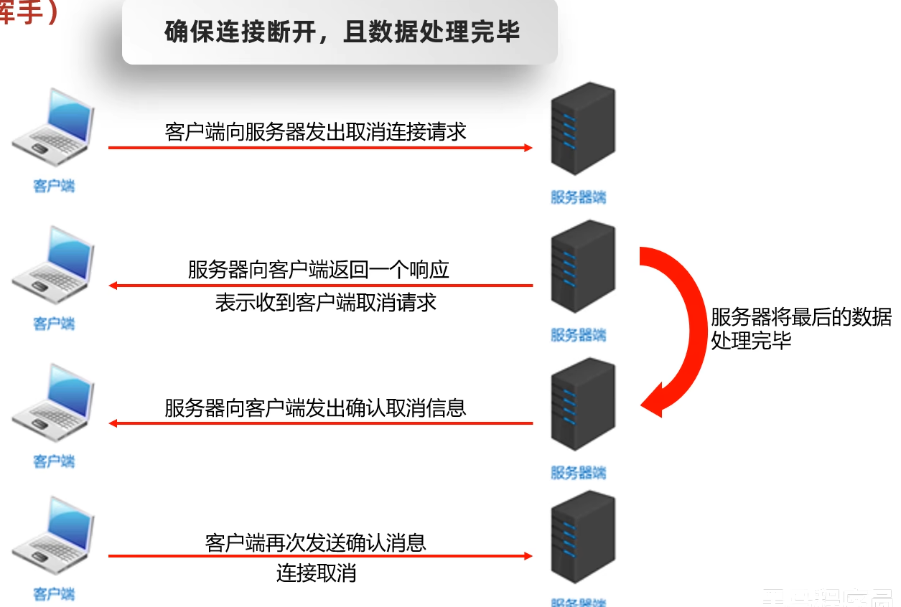
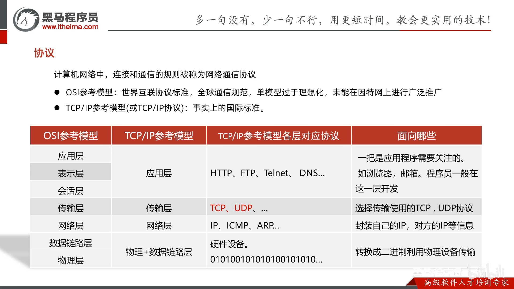
聊天软件
反射
反射允许对封装类的字段，成员变量和构造方法的信息进行变成访问
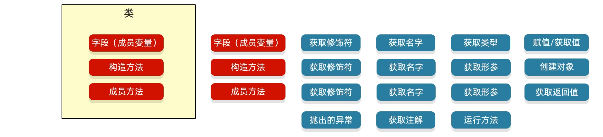
获取Class对象
xxxxxxxxxx31Class xxx = Class.forName("全类名");2Class xxx = Class xxx = 类名.class;3Class xxx = 对象.getClass();获取构造方法
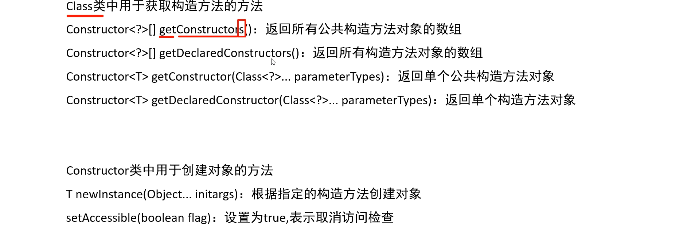
xxxxxxxxxx81//Class2Constructor<?>[] getConstructors();3Constructor<?>[] getDeclaredConstructors();4Constructor<?> getConstructor(Class<?>... parameterTypes);5Constructor<?> getDeclaredConstructor(Class<?>... parameterTypes);6//Constructor7T newInstance(Object...initargs);8setAccessible(boolean flag);获取成员变量
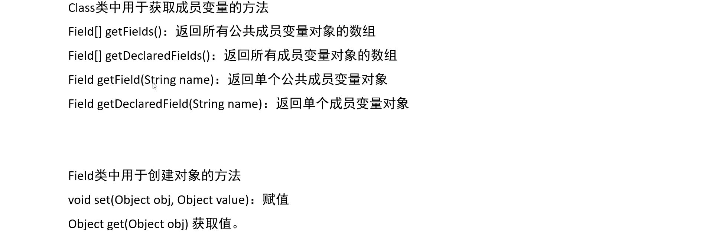
xxxxxxxxxx81//Class2Field[] getFields();3
4
5
6//Field7void set(Object obj,Object value);8Object get(Object obj);获取成员方法
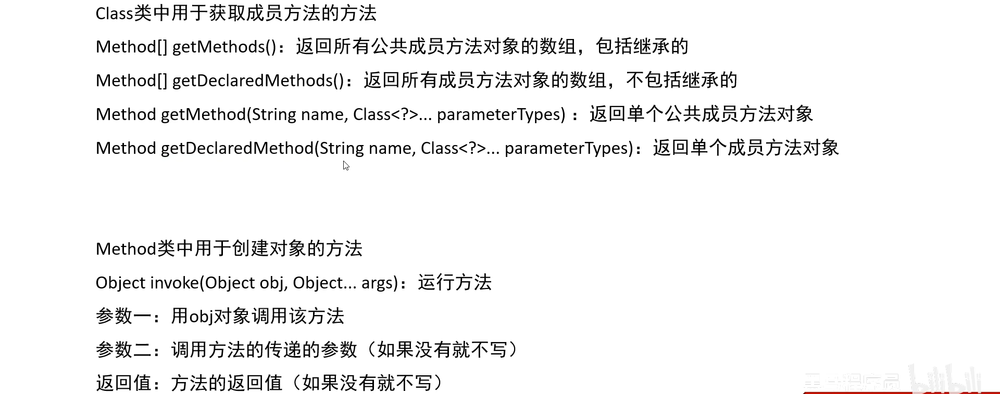
xxxxxxxxxx81//Class2
3
4
5
6//Method7
8
反射的作用
- 获取一个类里所有的信息，获取到后再执行其他业务逻辑
- 结合配置文件动态创建对象并调用方法
枚举
设计模式